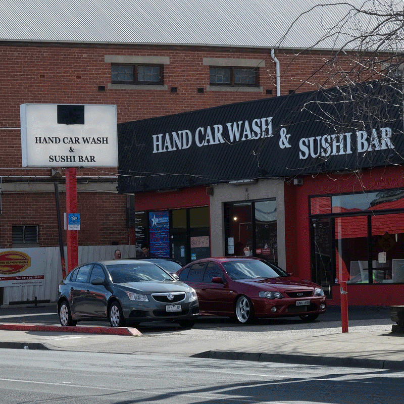
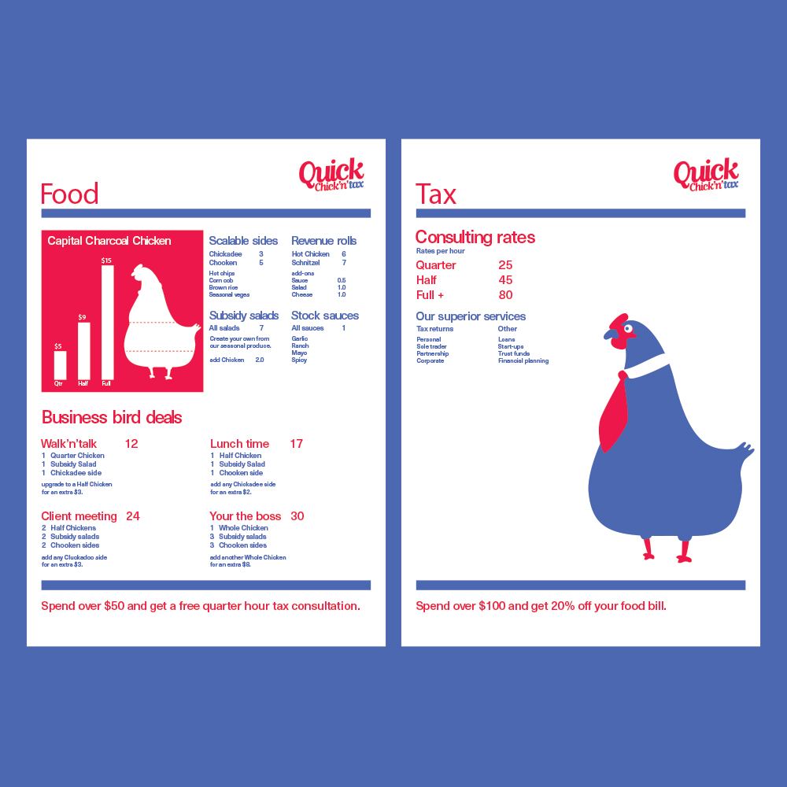
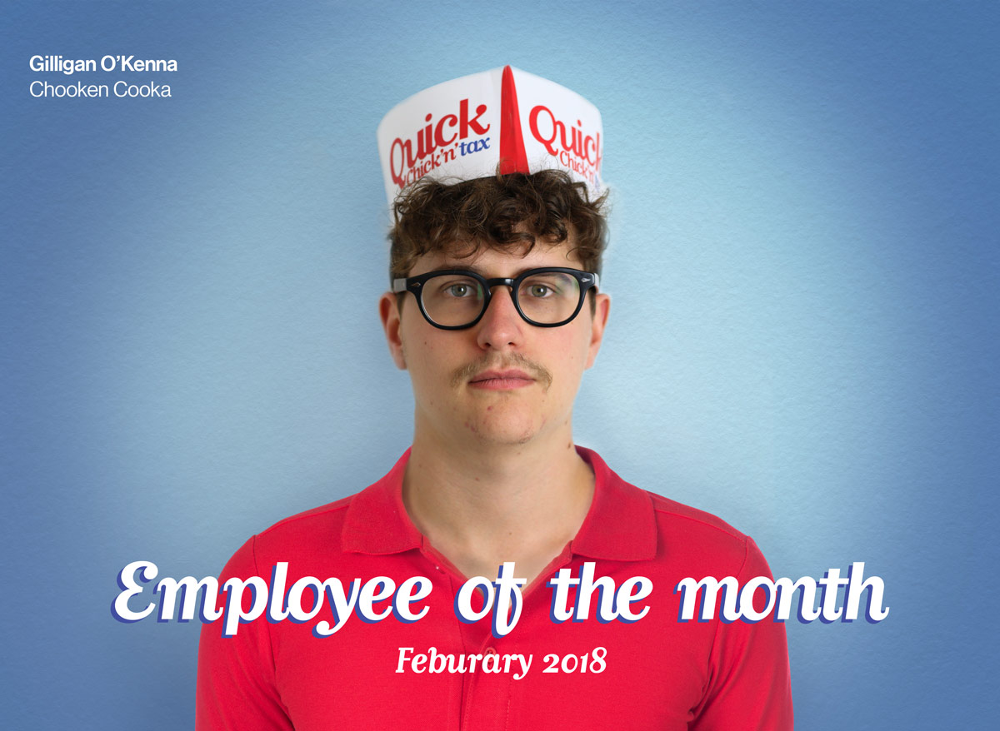
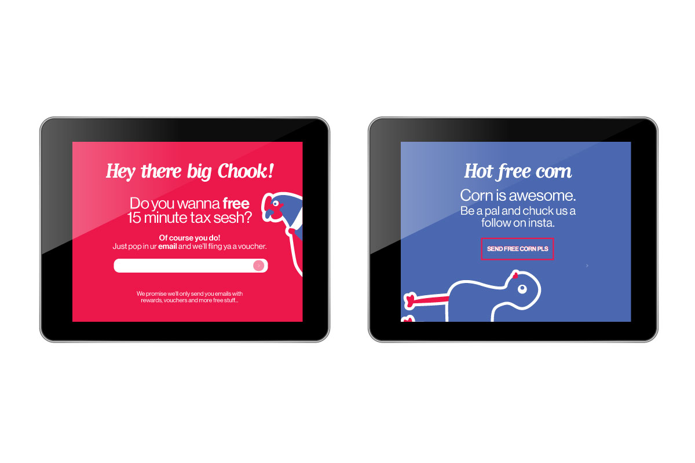

This is an evolving project that started with an investigation into signage and graphic language typical of Sydney Road in Melbourne. See my article
Sorry We're Closed for the detailed write up.

Sydney Road and surrounds is a ripe little plum.
The notorious Sushi Carwash (R.I.P) in Coburg triggered the next step of this project. What if a bizzare combination of traditional businesses was perhaps not so absurd? What if as a designer, you were tasked with rationalising a clients insane request and making it work?
So lets try and rationalise one of these.
An imaginary billionaire client has tasked me with making a charcoal chicken and tax return combination business work. Two stallwarts of the Aussie shopping strip coming together at last. The project evolved into a service design excercise as tried to figure out how to make this abomination work (and beef out the branding.)

The visual language is inspired by Corporate America graphic design.
The only thing more fun than a tax consultation is a tax consultation with lunch.
While the premise of the project is tounge in cheek, it gave me the opportunity to research the idea of ''the restaurant of the future' and implement some ideas into the service. While there is not much to show for it, a lot of time was spent theorising how to optimise the service for the customer, making it quick 'n' easy.

Innovative in-table ordering interface (ITOI)
There is on super interesting use of technology to minimise food wastage. Perishable stock is to be monitored and re-ordered digitally. If certain ingrediants were close to perishing, they could be offered to the customer for cheap or free, rather than waste them. This is where direct real-time messaging to the customer proves handy, whether that be through their phones via email/socials or in store through dining table tablets.

Hey, don't chuck out that slimey corn! You can palm it off to the customers!